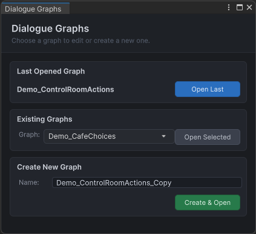
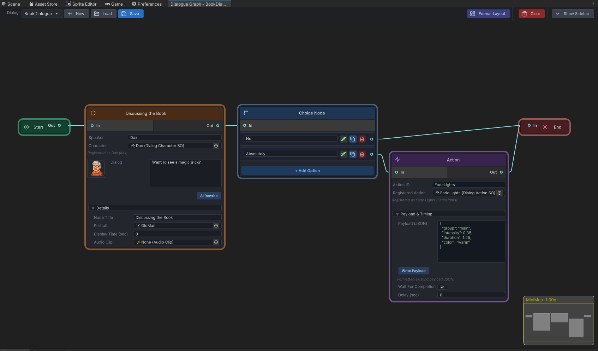
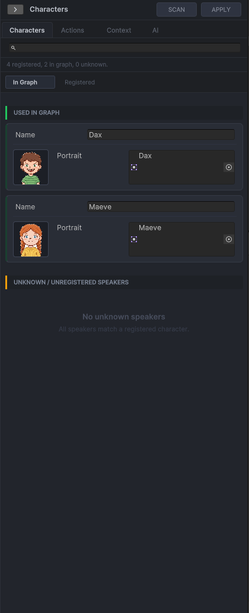
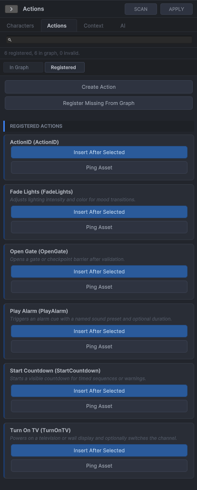

Graph Editor
The graph editor provides the authoring surface for creating DialogGraph assets and their node sub-assets.
Key files
DialogGraphLauncherWindow.csDialogGraphEditorWindow.csDialogGraphView.csView/Elements/Nodes/*DialogGraphLayoutFormatter.csDialogUndoUtility.cs
Authoring entry point
Open Tools → Dialogue Graph System → Dialogue Graph. The launcher window is the main entry point and lets you open the last edited graph, choose an existing graph, or create and open a new graph.
How graph assets are stored
The editor stores the graph as one DialogGraph asset with multiple node sub-assets attached to it. This keeps save/load and import/export simpler than storing each node separately.
Right sidebar — four tabs
The editor window is a split-view with the graph canvas on the left and a four-tab sidebar on the right. Each tab is a focused panel for a different authoring concern.
- Characters — bulk-assign speaker names, portraits, and voice clips to all nodes for a given character at once.
- Actions — browse and manage
DialogActionSOassets; see which action IDs are available before wiring them into action nodes. - Context — set the scene summary, world context, and
DialogSpecificationSOasset used by the AI extension'sGenerateDialogFlowDraftcommand. - AI — issue free-text commands to the active AI provider, review the routing result, and confirm or reject the preview before any graph mutation is applied.
Format Layout and validation
The toolbar exposes a Format Layout button that runs DialogGraphLayoutFormatterEditor.FormatLinkedSubgraphOnly — it re-spaces nodes in the connected subgraph without touching unconnected ones. A separate Validate button opens the graph validation window with click-to-select navigation for any errors or warnings found.
View-state persistence
Pan position, zoom level, and sidebar toggle state are saved per graph in EditorPrefs. Reopening a graph restores exactly where you left off.
GraphView responsibilities
- zooming, dragging, and selection
- grid and minimap
- context-menu node creation
- graph save/load synchronization
- start/end node guarantees
- undo-aware structural changes
Common mistakes
- modifying node data without marking the graph dirty
- bypassing undo utilities when adding or removing assets from the graph
- treating GraphView state as authoritative instead of the serialized asset
Launcher window

Good for showing the entry flow into the editor.
Graph editor overview

Best visual for this page.
Characters sidebar

Name and portrait assignments for speaker nodes, managed from the graph editor sidebar.
Actions sidebar

Define and review available action IDs from the Actions tab without leaving the editor.
New dialogue dialog

The creation prompt for new graph assets — sets the dialog ID before opening the canvas.